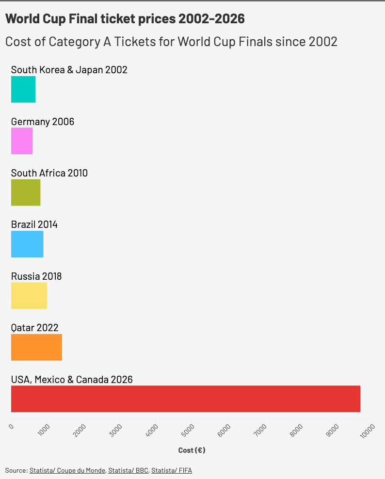
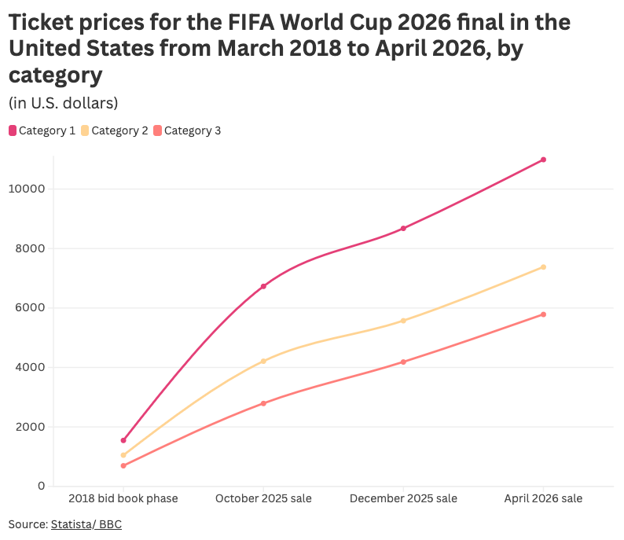

Controversies have dogged this year's World Cup: Somalian referee Omar Artan was denied entry to the USA and the Iran national team coach said they had been treated "unfairly" by the USA — but arguably the longest-running has been the saga over ticket prices.
When the first batch of tickets were released by FIFA in December, there was widespread outcry.
For England fans buying through the England Supporters' Travel Club (ESTC), if England had reached Sunday's final, the least they could have paid to attend every match was £5,245 — the most would be £12,400.
After these were announced, FIFA introduced 'Supporter Entry Tier' tickets. These cost £45 ($60; €52) and were available through supporters' clubs like ESTC.
This tier of tickets represents 1.6% of overall tickets allocated.
In April, on FIFA's own official resale and exchange marketplace, four tickets for the World Cup final were reportedly on sale for almost $3m each (£2.2m; €2.6m).
Unofficial resale sites — like StubHub — have been selling tickets for England vs Argentina on Wednesday (15/7) in the semi-final for €45,000 (£38,170; $51,595).
FIFA president Gianni Infantino has defended the general prices, citing the cost of college sports in America and resale culture in the US.
In May, President Trump said he "wouldn't pay it either" — referring to a $1,000 (£736; €878) ticket to USA's opener against Paraguay in June.
Data compiled by Statista shows exactly how much tickets at this summer's World Cup have increased both in terms of past tournaments and FIFA and the co-host's proposed prices across the bidding process.

The above graph shows Category A ticket prices for the final stages of each of the previous six World Cup tournaments. Category A tickets are the most expensive tier of tickets.
Statista's data — compiled from the BBC and Coupe du Monde — shows minimal increases tournament-on-tournament.
Until 2022 Qatar, no final stage tickets crept above €1000 (£852; $1,138).
Then, when tickets were released in April for the 2026 World Cup final, the price had increased to $10,990 (€9,654; £8,233).
That is a five-fold increase from 2022 to 2026.
Those final tickets released in April already reflected a significant increase on FIFA's pricing from their initial 2018 bid, through to the aforementioned 2026 sale.

That Statista data shows a steady increase since the 2018 bid book phase.
Then, the Category 1 ticket price for the final was $1,550 (£1,161; €1,361) — similar to the Qatar final stage price of €1,413 ($1,608; £1,204).
A sharp increase in the October 2025 sale saw Category 1 tickets sell for $6,730 (€5,912; £5,042).
This rise signalled FIFA and the co-hosts' pricing strategy, which received significant criticism, resulting in the 'Supporter Entry Tier' tickets.
From there, a 29% increase in December to $8,680 (€7,624; £6,502) was followed by FIFA's final official sale in April 2026.
The percentage increase was a similar 26.6%, to $10,990 (€9,654; £8,233).
From 2018 to April 2026, that is a six times increase.
Both datasets therefore show FIFA are charging fans almost six times as much to attend the final — in comparison to the most recent World Cup (2022) and their own proposed prices in 2018.
This may have been reflected in the number of empty seats seen during matches — including Argentina's quarter-final victory over Switzerland — despite FIFA's official attendance figures suggesting almost all of the games were at capacity.
Now, FIFA have released 1,000 extra tickets for the final at $7,380 (€6,484; £5,528).
$7,380 from $1,550 (the 2018 bid phase price) is still a near four-fold increase and only a 33% decrease from the April 2025 ticket release price.
When approached for comment, a FIFA spokesperson said:
“At FIFA, we are committed to ensuring fair access to the FIFA World Cup™ for both existing and prospective fans and have offered group stage tickets starting from just USD 60 – an extremely competitive price for a once-in-a-lifetime major global sporting event taking place in North America.
“FIFA’s pricing strategy spans a broad range of price points and categories, reflecting market demand for each match. Tickets have been released across sales phases, such as Category 4 at the most accessible price point and 130,000 tickets have been made available priced at USD 60 across the tournament via participating teams, including over 1,000 for the final.
“FIFA’s Resale Marketplace provides a safe, transparent and secure environment for fans to sell or transfer tickets to other fans. The applicable resale facilitation fees are aligned with industry standards across North American sports and entertainment sectors.”
All exchange rates based on data from Google Finance (13/7/26).